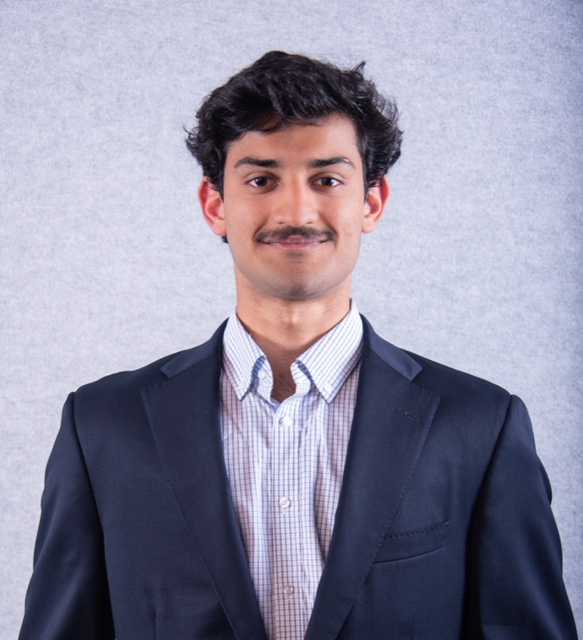

Welcome! I am an electrical engineering student at Georgia Tech, concentrating in energy systems and signal processing. I previously completed a BS in Applied Math and Physics at Emory University.
My research interests are in scientific computing, specifically machine learning and optimization.
Publications
- A. DeLise, K. Loh, K. Patel, M. Teague, A. Arnold, and M. Chung, "Optimal linear baseline models for scientific machine learning," Foundations of Data Science (AIMS), 2026.
- K. Patel, "Exploring ML for predictive maintenance using imbalance correction techniques and SHAP," 2022 International Conference on Electrical, Computer and Energy Technologies (ICECET), IEEE, 2022.
Banner photo: Dülmen Solarpark by Dietmar Rabich, CC BY-SA 4.0.